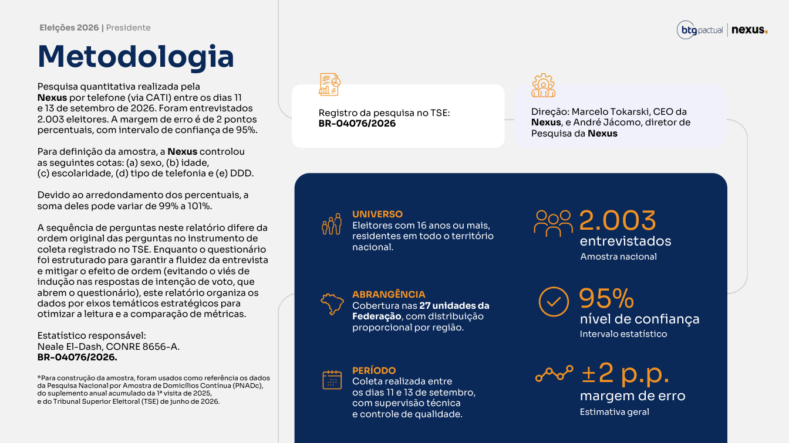
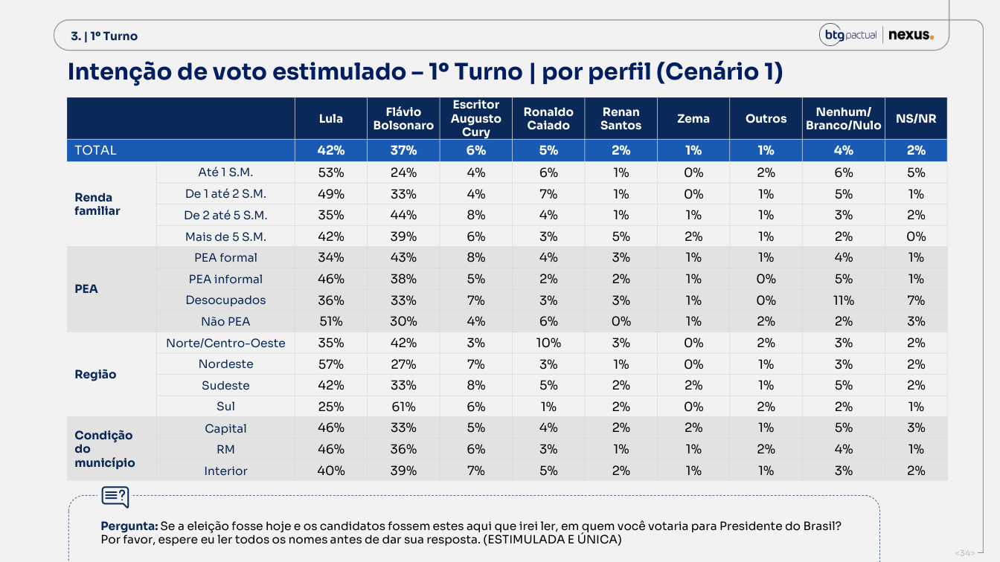
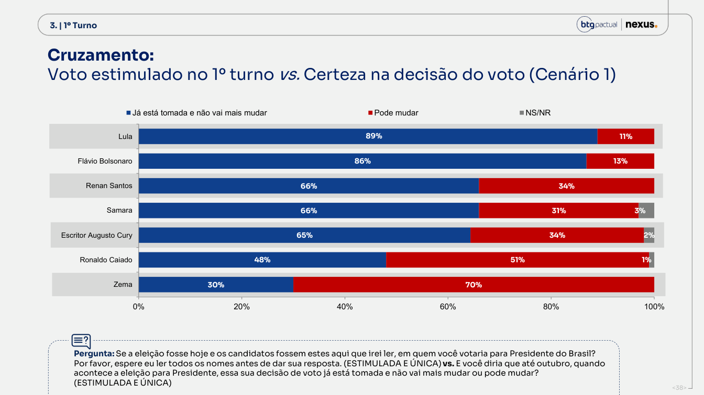
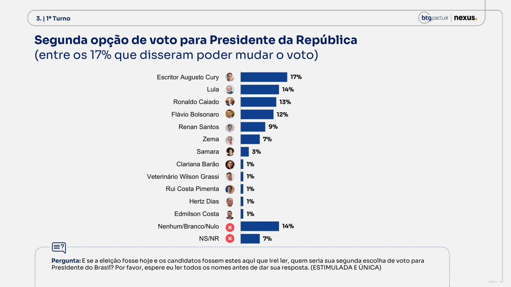
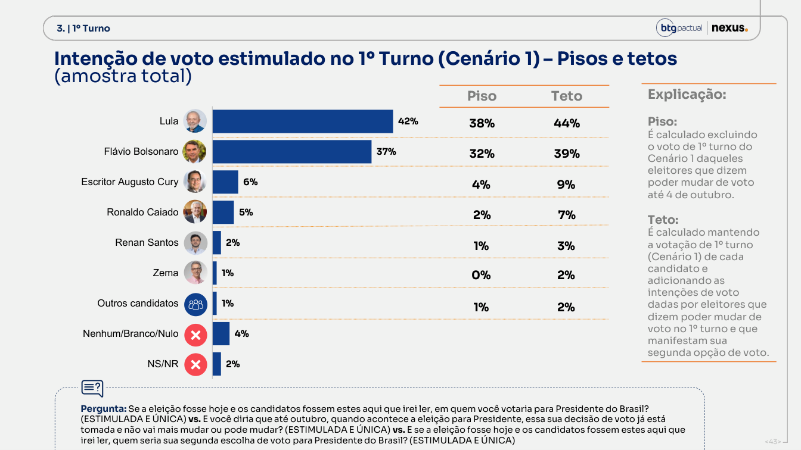
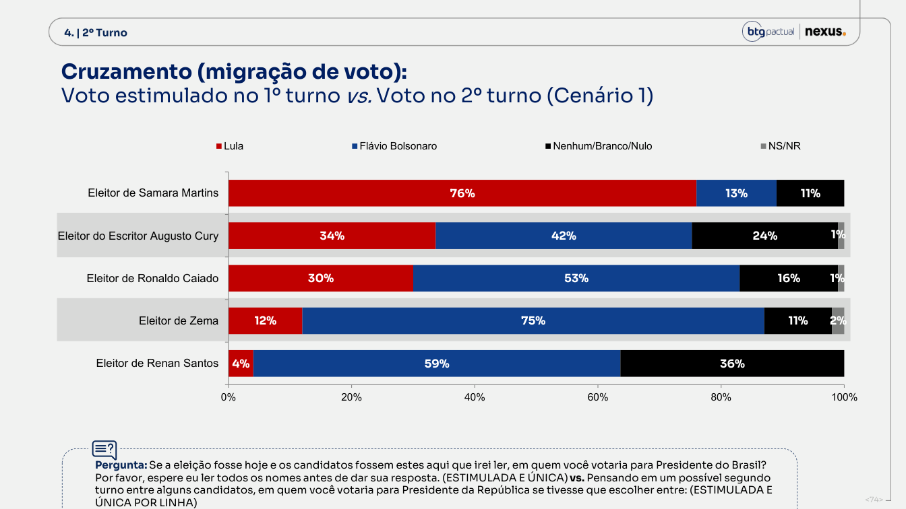
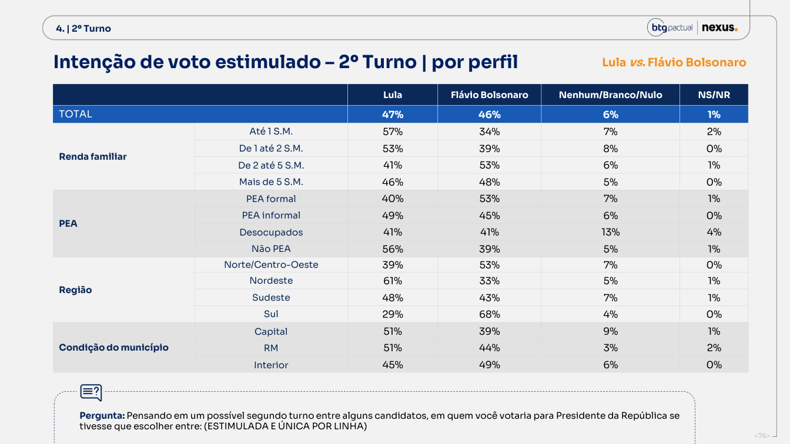
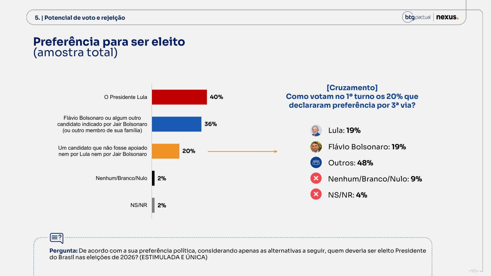
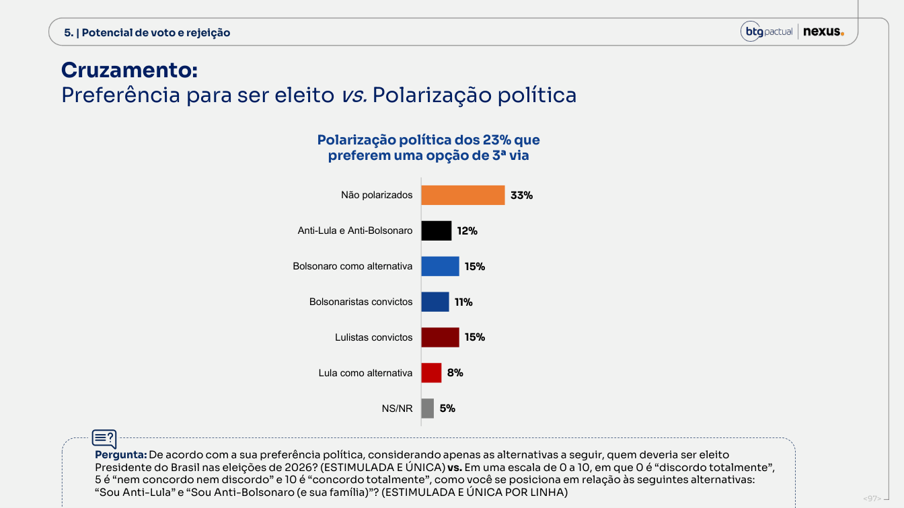
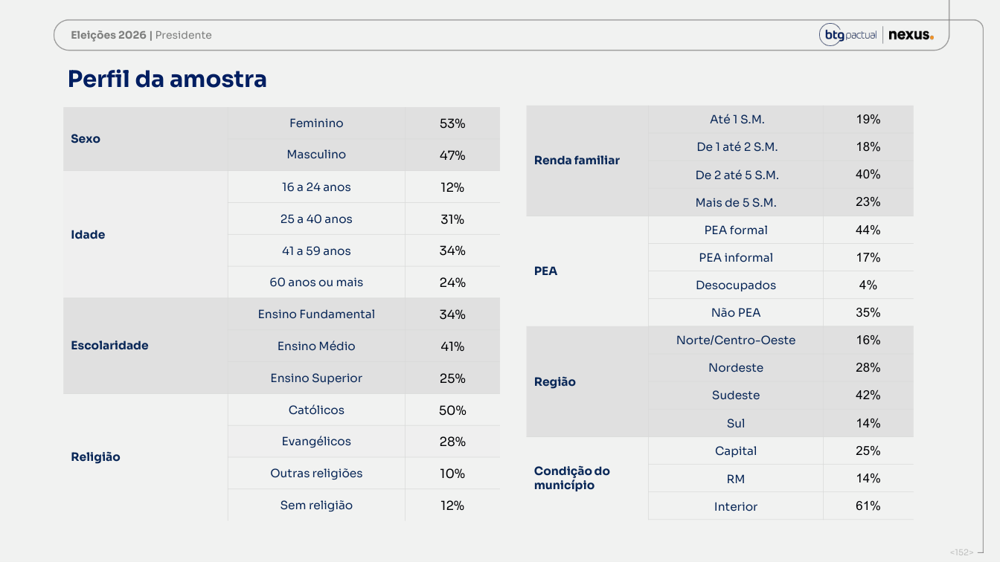

A renda encurta a diferença.
O sinal permanece.
O segundo turno publicado marca Lula 47% e Flávio 46%. Com a distribuição de renda da PNAD, passa a 46,69% e 46,40%. A diferença cai de um ponto para 0,28. É sensibilidade a uma margem, sem liderança estatisticamente identificada. p. 76 · p. 152
A amostra publicada tem 19% até um salário mínimo; a régua devolve 13,44%. Mas a faixa seguinte está abaixo da PNAD: 18% contra 21,75%. Até dois salários, a diferença agregada é apenas 37% contra 35,19%. O desvio na primeira faixa não pode ser apresentado como desvio de todo o bloco de baixa renda.
A crítica antiga não serve automaticamente. A metodologia já declara PNAD anual 2025, primeira visita, e TSE de junho/2026. Declarar a mesma pesquisa de referência não determina renda familiar, universo, tratamento de ausência de renda nem distribuição conjunta dos pesos. Renda nem aparece na lista de cotas de controle. O nosso exercício troca o perfil publicado, sem alegar que o instituto usou PNAD velha. p. 4
| Cenário | Lula 1º | Flávio 1º | Lula 2º | Flávio 2º | Dif. 2º L−F |
|---|---|---|---|---|---|
| Publicado | 42,00 | 37,00 | 47,00 | 46,00 | +1,00 |
| Pessoas 16+, efetivo (principal) | 41,70 | 37,57 | 46,69 | 46,40 | 0,28 |
| Pessoas 16+, habitual | 41,57 | 37,71 | 46,58 | 46,52 | 0,05 |
| Domicílios, efetivo (outro universo) | 42,68 | 36,48 | 47,59 | 45,30 | 2,30 |
A conta fica aberta.
Antes de trocar os pesos, o cruzamento precisa reproduzir o placar da própria Nexus. Renda, sexo e escolaridade passam por controles independentes.
| Faixa | Peso Nexus % | Peso PNAD % | Lula % | Flávio % | Contrib. Lula | Contrib. Flávio |
|---|---|---|---|---|---|---|
| Até 1 SM | 19,00 | 13,44 | 57 | 34 | 10,83 | 6,46 |
| 1 a 2 SM | 18,00 | 21,75 | 53 | 39 | 9,54 | 7,02 |
| 2 a 5 SM | 40,00 | 39,26 | 41 | 53 | 16,40 | 21,20 |
| Mais de 5 SM | 23,00 | 25,55 | 46 | 48 | 10,58 | 11,04 |
O cruzamento de renda recompõe 47,35% para Lula e 45,72% para Flávio, contra 47% e 46% publicados. A média com a PNAD dá 47,04% e 46,12%. Somamos apenas a diferença entre as duas médias ao placar publicado. Assim, o arredondamento da tabela não é promovido a mudança de voto. p. 76 · p. 152
| Controle independente | Lula 1º | Flávio 1º | Lula 2º | Flávio 2º |
|---|---|---|---|---|
| Sexo | 42,30 | 37,23 | 47,36 | 45,64 |
| Escolaridade | 42,39 | 36,92 | 47,05 | 45,97 |
Os resíduos máximos dos candidatos na renda são 0,55 ponto no primeiro turno e 0,35 no segundo. Sexo e escolaridade também recompõem os finalistas com menos de um ponto de resíduo. Os dados são extraídos por programa das tabelas, com rótulo, página e número de colunas conferidos. p. 33 · p. 34 · p. 75 · p. 76 · p. 152
Arredondamento não é incerteza amostral. Mantendo placar e pesos fixos, variar cada célula dos dois candidatos em até ±0,5 ponto altera a diferença ajustada em no máximo 0,13 ponto. Esse limite não inclui arredondamento dos perfis ou do placar, erro de amostragem, renda omitida ou efeito do desenho.
O histograma usa caixas de R$ 10 e interpola os cortes. O cartão desta rodada não foi obtido; usamos a continuidade dos salários de 2026 conferida em questionários anteriores. O último IPCA local é 2026-07; o motor mantém o último índice para meses posteriores. O alvo preserva a comparação com o agregador. Renda familiar declarada e rendimento domiciliar efetivo não são conceitos idênticos.
As linhas impressas nem sempre somam 100. O agregador preserva as células e ancora cada opção no seu percentual publicado; por isso a linha ajustada completa pode somar ligeiramente diferente de 100. Não normalizamos apenas este dossiê para produzir um número diferente da série comum.
A recuperação tem dois lados.
De 8 para 14 de setembro, Lula sobe três pontos no primeiro turno e dois no segundo. Flávio sobe dois no primeiro e fica em 46% no segundo. Cury cai de 9% para 6%; Renan, de 4% para 2%. São oscilações entre amostras, sem rastreamento de pessoas. p. 21 · p. 53
| Divulgação | 1º publicado L×F | 1º PNAD L×F | 2º publicado L×F | 2º PNAD L×F | Dif. PNAD 2º |
|---|---|---|---|---|---|
| 25/05 | 40 × 35 | 39,13 × 35,70 | 47 × 43 | 46,07 × 44,61 | 1,46 |
| 15/06 | 42 × 33 | 41,23 × 33,84 | 49 × 43 | 48,05 × 43,97 | 4,08 |
| 29/06 | 42 × 34 | 40,93 × 35,07 | 47 × 44 | 45,80 × 45,25 | 0,54 |
| 13/07 | 40 × 34 | 39,14 × 34,81 | 47 × 44 | 46,06 × 44,70 | 1,36 |
| 27/07 | 42 × 33 | 40,31 × 33,90 | 47 × 43 | 45,44 × 44,65 | 0,79 |
| 03/08 | 41 × 37 | 39,67 × 38,23 | 46 × 45 | 44,75 × 46,47 | -1,72 |
| 10/08 | 40 × 35 | 39,34 × 35,16 | 47 × 44 | 46,22 × 44,50 | 1,72 |
| 17/08 | 41 × 36 | 40,70 × 36,06 | 47 × 44 | 46,74 × 44,28 | 2,46 |
| 24/08 | 41 × 37 | 40,15 × 37,50 | 46 × 45 | 45,40 × 45,88 | -0,47 |
| 31/08 | 39 × 33 | 38,21 × 33,75 | 46 × 45 | 44,89 × 46,16 | -1,27 |
| 08/09 | 39 × 35 | 38,66 × 35,47 | 45 × 46 | 44,55 × 46,65 | -2,10 |
| 14/09 | 42 × 37 | 41,70 × 37,57 | 47 × 46 | 46,69 × 46,40 | 0,28 |
Na régua comum, o segundo turno de 8/9 era 44,55% × 46,65%; agora é 46,69% × 46,40%. A mudança não desaparece ao fixar o critério de renda. A distribuição publicada 19/18/40/23 permanece igual: nesta comparação, o movimento vem dos votos dentro das faixas e do placar de referência, não da troca desse perfil.
Não confundimos a série comum com os números de um dossiê antigo: versões anteriores usaram normalização das linhas e alvos próprios. Aqui, todas as ondas passam pelo mesmo motor do agregador, com seus cruzamentos originais. A série publicada retrocede a março; a reponderada começa em maio.
Cinco origens medidas.
Duas bases consolidadas.
O relatório publica o destino no segundo turno de quem escolheu Cury, Caiado, Renan, Zema e Samara no primeiro. Não publica as linhas de Lula, Flávio, branco/nulo e indecisos. Neste diagrama, Lula e Flávio retêm integralmente suas bases por hipótese. Só as origens branco/nulo e indecisos são estimadas, com as margens como restrição. p. 20 · p. 52 · p. 74
Selecione uma fita para ler origem, destino e volume.
| Origem no 1º | Lula | Flávio | B/N | NS/NR | Soma impressa |
|---|---|---|---|---|---|
| Cury | 34% | 42% | 24% | 1% | 101% |
| Caiado | 30% | 53% | 16% | 1% | 100% |
| Renan | 4% | 59% | 36% | 0% | 99% |
| Zema | 12% | 75% | 11% | 2% | 100% |
| Samara | 76% | 13% | 11% | 0% | 100% |
As cinco candidaturas somam 15% no primeiro turno. Seus cruzamentos entregam 7,22 pontos a Flávio, 4,48 a Lula e 3,30 à não escolha. A razão Flávio/Lula é 1,61 para 1. Com as bases integralmente retidas, o restante do ganho dos finalistas vem da não escolha inicial neste modelo.
Cury sozinho fornece cerca de 2,50 pontos a Flávio e 2,02 a Lula. Caiado fornece 2,65 e 1,50. Somar toda a terceira via como reserva exclusiva de Flávio contradiz a própria matriz da Nexus. p. 74
Ver matriz completa e escolhas do modelo
| Origem | Lula (pp) | Flávio (pp) | B/N (pp) | NS/NR (pp) | Natureza |
|---|---|---|---|---|---|
| Lula | 42,00 | 0,00 | 0,00 | 0,00 | base consolidada por hipótese |
| Flávio | 0,00 | 37,00 | 0,00 | 0,00 | base consolidada por hipótese |
| Cury | 2,02 | 2,50 | 1,43 | 0,06 | medido, normalizado |
| Caiado | 1,50 | 2,65 | 0,80 | 0,05 | medido, normalizado |
| Renan | 0,08 | 1,19 | 0,73 | 0,00 | medido, normalizado |
| Zema | 0,12 | 0,75 | 0,11 | 0,02 | medido, normalizado |
| Samara | 0,76 | 0,13 | 0,11 | 0,00 | medido, normalizado |
| B/N | 0,32 | 1,09 | 2,47 | 0,12 | estimado |
| NS/NR | 0,20 | 0,69 | 0,35 | 0,75 | estimado |
As bases de Lula e Flávio têm retenção fixada em 100%, com zero estrutural em todos os outros destinos. É uma hipótese de consolidação, não uma medição da Nexus. As duas linhas ficam fora do IPF. Branco/nulo parte de 15/15/67/3; indecisos, de 20/20/20/40. IPF/RAS ajusta só o resíduo até fechar as margens. Testamos mais duas priors para as origens branco/nulo e indecisos, mantendo as bases fixadas; o JSON guarda todos os resultados. As porcentagens internas estimadas não são medição de fidelidade.
O 1% de “Outros” é representado por Samara, que também tem 1% na tabela nominal; candidaturas com 0% impresso ficam fora. Arredondamento pode ocultar massas pequenas. A matriz descreve agregados da pesquisa, não trajetórias individuais entre eleições. Sem renda × candidato de origem × destino, não existe Sankey PNAD identificado: não aplicamos o peso de renda às fitas como se essa tabela tivesse sido publicada.
Há espaço para voto útil.
Não há prova de migração consumada.
Flávio precisa acrescentar nove pontos líquidos entre os dois cenários: 37% para 46%. Lula acrescenta cinco: 42% para 47%. A razão de consolidação líquida é 1,80 para 1, contra 1,83 na rodada anterior. A assimetria já estava no segundo turno. p. 21 · p. 53
Se um eleitor que já escolhe Flávio no segundo turno antecipar essa escolha ao primeiro, o primeiro turno cresce sem alteração mecânica do segundo. O movimento observado de Flávio, +2 no primeiro e zero no segundo, é compatível com isso. Mas amostras repetidas não identificam quem mudou, a origem, nem a causa. Lula também cresceu; a soma de ambos no primeiro foi de 74% para 79%.
| Pergunta/recorte | Resultado | O que permite concluir |
|---|---|---|
| Pode mudar o voto? | 17% entre quem escolheu candidato; 83% decidido p. 35 | Não são 17% de todo o eleitorado. |
| Certeza por candidato | Lula 89%; Flávio 86%; Cury 65%; Caiado 48%; Zema 30% p. 38 | Decisão declarada não é garantia de voto. |
| Segunda escolha dos que podem mudar | Cury 17%; Lula 14%; Caiado 13%; Flávio 12%; Renan 9%; Zema 7% p. 41 | A segunda escolha não favorece exclusivamente Flávio. |
| Pisos e tetos publicados | Lula 38–44%; Flávio 32–39%; Cury 4–9% p. 43 | Contas de cenário, sem intervalo probabilístico. |
| Certeza no segundo turno | Lula 91%; Flávio 90% p. 56 | Não confundir com fidelidade de base do primeiro para o segundo. |
| Segunda escolha no segundo turno | B/N 42%; Lula 22%; Flávio 18%; NS 18%, entre os 11% que podem mudar p. 58 | Parte da abertura termina em não escolha. |
Aproximadamente 94% escolheram candidato. Logo, 94% × 17% ≈ 15,98% do eleitorado declara voto ainda mutável. Aplicar os 12% que citam Flávio como segunda escolha dá cerca de 1,92 ponto, uma entrada bruta hipotética. Sua própria base tem 13% que pode mudar, cerca de 4,81 pontos. Não se deve somar a entrada e ignorar a possível saída. p. 38 · p. 41 · p. 46
Duas perguntas não publicam a interseção
Por candidato, sabemos a fração que pode mudar e a que escolhe Flávio no segundo turno. Não sabemos quantos pertencem às duas ao mesmo tempo. Os limites de Fréchet dão o intervalo matematicamente possível, sem supor independência.
| Origem | 1º turno % | Pode mudar % | Flávio no 2º % | Interseção mínima (pp) | Máxima (pp) |
|---|---|---|---|---|---|
| Cury | 6 | 34 | 42 | 0,00 | 2,04 |
| Caiado | 5 | 51 | 53 | 0,20 | 2,55 |
| Renan | 2 | 34 | 59 | 0,00 | 0,68 |
| Zema | 1 | 70 | 75 | 0,45 | 0,70 |
Os limites da Nexus na p. 43, a interseção acima e os nove pontos líquidos de consolidação respondem perguntas diferentes. Somá-los produziria dupla contagem. Para medir voto útil motivado, faltam a pergunta sobre motivo e o cruzamento origem × certeza × segunda opção × segundo turno.
Flávio rende mais no agregado.
Cury tem contrapontos.
A mesma amostra testa cinco adversários de Lula. Flávio chega a 46%, cinco pontos acima de Caiado e quatro acima de Cury. A resposta à troca de candidato também passa por Lula e pela não escolha. p. 52
| Adversário | Lula | Adversário | B/N | NS/NR | Dif. Lula−adv. |
|---|---|---|---|---|---|
| Flávio | 47% | 46% | 6% | 1% | 1 pp |
| Caiado | 47% | 41% | 11% | 1% | 6 pp |
| Zema | 49% | 38% | 11% | 1% | 11 pp |
| Renan | 48% | 37% | 14% | 1% | 11 pp |
| Cury | 45% | 42% | 11% | 2% | 3 pp |
Trocar Flávio por Caiado reduz o desafiante de 46% para 41%, mantém Lula em 47% e eleva branco/nulo de 6% para 11%. Essa comparação é medida na mesma amostra, mas não é experimento causal de substituição de candidatura. Ela não prova que as mesmas pessoas iriam diretamente ao nulo.
O contraponto tem o mesmo peso. Entre jovens de 16 a 24 anos, Cury chega a 50% contra 49% de Flávio nos respectivos duelos. Acima de cinco salários, Cury tem 50% contra 48% de Flávio; Lula cai de 46% para 41%. As pequenas diferenças por subgrupo não identificam superioridade estatística, mas impedem escrever que Flávio domina todos os recortes. p. 75 · p. 76 · p. 83 · p. 84
Entre quem declara voto em Jair Bolsonaro em 2022, Flávio tem 79% no primeiro e 93% no segundo. Entre quem declara Lula em 2022, Lula tem 82% e 89%. São perguntas feitas em setembro de 2026 sobre lembrança de 2022, sujeitas a erro de memória e composição; não são uma pesquisa antiga nem a matriz de retenção das bases atuais. p. 23 · p. 68
Rejeição não é voto.
Terceira via não é um bloco.
Lula tem 48% de rejeição; Flávio, 50%. O potencial declarado é 50% para Lula e 48% para Flávio. Essas medidas não são teto intransponível, previsão ou substituto da pergunta de intenção de voto. p. 86
| Nome | Único em quem votaria | Poderia votar | Rejeita | Não conhece |
|---|---|---|---|---|
| Lula | 38% | 12% | 48% | 1% |
| Flávio | 30% | 18% | 50% | 1% |
| Cury | 6% | 36% | 33% | 24% |
| Caiado | 4% | 33% | 39% | 23% |
| Zema | 2% | 29% | 42% | 26% |
| Renan | 2% | 22% | 43% | 32% |
O cruzamento de potencial encontra 44% que aceitam Lula e rejeitam Flávio, 43% que aceitam Flávio e rejeitam Lula, 5% que aceitam ambos e 5% que rejeitam ambos. Aceitar os dois não significa dividir o voto, e rejeitar os dois não obriga a votar nulo. p. 91
Na preferência por campo político, 40% escolhem Lula, 36% Flávio ou um indicado da família Bolsonaro e 20% alguém sem apoio de ambos. Dentro desses 20%, Lula e Flávio têm 19% cada no primeiro turno; outros candidatos somam 48%. Preferência abstrata por terceira via não descreve uma cédula sem os finalistas. p. 95
O enquadramento das perguntas também conta: a escala opõe “Anti-Lula” a “Anti-Bolsonaro (e sua família)”. São objetos assimétricos, pessoa e família. A classificação “não polarizados” vem dessas respostas, não de uma escala universal de centro político. O relatório descreve 18% não polarizados, 28% lulistas convictos e 30% bolsonaristas convictos. p. 8 · p. 12
O governo recupera aprovação.
A segurança concentra perda.
Aprovação pessoal: 47%. Desaprovação: 49%. Avaliação ótima/boa: 37%; ruim/péssima: 44%. Comparadas à rodada anterior, aprovação sobe dois pontos e avaliação negativa cai dois. Isso não se resume ao primeiro turno. p. 129 · p. 130 · p. 135 · p. 136
Segurança reúne 45% de piora e 24% de melhora, saldo de −21 pontos. Renda tem 41% de melhora e 29% de piora, saldo de +12; poder de compra anda no sentido oposto, 36% contra 43%, saldo de −7. Renda nominal e capacidade de compra não devem ser tratados como a mesma experiência. p. 99
Na atribuição ao governo, 36% do total dizem que a segurança piorou por influência federal e 21% que melhorou por essa influência. Na renda, são 26% e 35%. O governo recebe crédito em uma dimensão e responsabilização em outra. É percepção declarada, não identificação causal de efeito de políticas. p. 127
Quando se pedem o primeiro e o segundo principal problema, segurança soma 34% das menções, saúde 28% e corrupção 27%. Só na primeira menção, corrupção marca 20%, acima dos 17% de segurança. O ranking muda conforme a métrica; as respostas são múltiplas e não devem somar 100%. p. 142
96% declaram que decidiram ou provavelmente irão votar. Entre quem escolheu candidato no primeiro turno, 79% dizem saber e acertam seu número de urna; para Lula são 89% e para Flávio, 83%. Certeza e conhecimento são medidas úteis de consistência, mas não validam comparecimento futuro. p. 14 · p. 46 · p. 47
Um ponto não separa os dois.
A margem de uma proporção não é a margem da diferença entre candidatos. Para 2.003 entrevistas, o modelo de amostra aleatória simples já deixa o segundo turno atravessar zero.
| Cenário | Diferença L−F | Margem 95% da diferença (AAS) | Intervalo 95% (AAS) |
|---|---|---|---|
| 1º: 42 × 37 | +5,00 | ±3,89 | +1,11 a +8,89 |
| 2º: 47 × 46 | +1,00 | ±4,22 | −3,22 a +5,22 |
Amostragem: o segundo turno não identifica liderança nem sob esse modelo simples. O primeiro passa nesse cálculo ilustrativo; um efeito de desenho próximo de 1,66 já faria seu intervalo alcançar zero. A coleta por telefone com cotas exige cautela: sem probabilidades de inclusão, pesos e desenho completos, este não é o intervalo oficial da pesquisa.
Composição: a troca da renda reduz a diferença do segundo turno para 0,28 ponto e preserva o sinal positivo. Não é um segundo teste de significância. A reponderação não recebe o intervalo original como se os pesos e o benchmark fossem conhecidos sem erro.
O arquivo também é evidência.
Há avanços reais de transparência: referências de PNAD e TSE explicitadas, margens por perfil, cinco linhas de migração e perguntas de segunda escolha. Há também lacunas e inconsistências que precisam ser conciliadas.
| Registro documental | Constatação | Limite |
|---|---|---|
| Criação do PDF | 14/09/2026, 00:55:51 (UTC−3) | Posterior ao fim do campo de 13/9; não prova data pública. |
| Última modificação | 14/09/2026, 05:12:24 (UTC−3) | Metadado editável; não mede atraso de divulgação. |
| Ordem das perguntas | O relatório diz que reorganiza os resultados por tema p. 4 | Não se deve inferir a ordem da entrevista pela ordem das páginas. |
| Terceira via | A p. 95 diz 20%; o título da p. 97 ainda diz 23% p. 95 · p. 97 | Discrepância documental; não usamos 23% para contas nacionais. |
| Indecisos no cenário 1 | 2% na p. 20; a coluna “Cenário 1” da p. 22 mostra 1% p. 20 · p. 22 | Adotamos o placar principal, corroborado pelas pp. 33–34. |
| Cenário 2 repetido | Páginas 44–45 reaparecem em 49–50 | Duplicação editorial; não são duas ondas independentes. |
| Cury no título da série | A legenda da p. 66 traz “Eduardo”; título e demais tabelas dizem Augusto p. 66 · p. 83 | Erro de nome no documento; nossa identificação segue as tabelas. |
| Bases e pesos | Perfil percentual publicado; bases não ponderadas e pesos individuais ausentes | Não inferir tamanho real de subgrupo multiplicando n pela fatia ponderada. |
A ficha metodológica declara telefone/CATI, cotas de sexo, idade, escolaridade, tipo de telefonia e DDD, 27 UFs, 2.003 entrevistas entre 11 e 13/9, margem geral de ±2 pontos e registro BR-04076/2026. Não transportamos automaticamente o questionário, o valor contratado ou uma alegação de execução de agosto para esta rodada. p. 4
Para encerrar as lacunas: questionário registrado desta rodada com ordem e randomização; contagens brutas e ponderadas por faixa; regra de renda e tratamento da não resposta; pesos e efeito de desenho; linhas faltantes da matriz; cruzamento conjunto das perguntas de mudança. São pedidos de reprodutibilidade, não evidência de fraude ou direcionamento.
O anexo é conferível.
Trinta e duas páginas de tabelas alinhadas foram extraídas por programa, incluindo todos os duelos, condições de vida e governo. Cada linha conserva a página de origem. Os demais gráficos e perguntas estão na íntegra do PDF e na extração integral por página.
Tabela da página 33: 14 linhas
p. 33| Recorte | Lula | Flávio | Cury | Caiado | Renan | Zema | Outros | B/N | NS |
|---|---|---|---|---|---|---|---|---|---|
| TOTAL | 42% | 37% | 6% | 5% | 2% | 1% | 1% | 4% | 2% |
| Feminino | 47% | 33% | 7% | 5% | 0% | 1% | 1% | 4% | 2% |
| Masculino | 37% | 42% | 6% | 5% | 4% | 1% | 1% | 3% | 2% |
| 16 a 24 anos | 36% | 35% | 9% | 0% | 6% | 2% | 3% | 6% | 3% |
| 25 a 40 anos | 36% | 41% | 9% | 4% | 3% | 0% | 1% | 5% | 1% |
| 41 a 59 anos | 45% | 37% | 5% | 5% | 1% | 1% | 1% | 3% | 2% |
| 60 anos ou mais | 51% | 33% | 3% | 6% | 1% | 1% | 1% | 2% | 2% |
| Ensino Fundamental | 55% | 30% | 3% | 5% | 0% | 0% | 0% | 3% | 3% |
| Escolaridade Ensino Médio | 34% | 42% | 8% | 4% | 2% | 2% | 1% | 4% | 2% |
| Ensino Superior | 39% | 38% | 8% | 4% | 4% | 1% | 1% | 4% | 1% |
| Católicos | 48% | 33% | 7% | 5% | 1% | 1% | 1% | 3% | 1% |
| Evangélicos | 27% | 52% | 5% | 4% | 2% | 0% | 0% | 5% | 4% |
| Outras religiões | 39% | 35% | 5% | 5% | 3% | 2% | 2% | 6% | 3% |
| Sem religião | 56% | 22% | 7% | 3% | 4% | 1% | 4% | 4% | 0% |
Tabela da página 34: 16 linhas
p. 34| Recorte | Lula | Flávio | Cury | Caiado | Renan | Zema | Outros | B/N | NS |
|---|---|---|---|---|---|---|---|---|---|
| TOTAL | 42% | 37% | 6% | 5% | 2% | 1% | 1% | 4% | 2% |
| Até 1 S.M. | 53% | 24% | 4% | 6% | 1% | 0% | 2% | 6% | 5% |
| Renda De 1 até 2 S.M. | 49% | 33% | 4% | 7% | 1% | 0% | 1% | 5% | 1% |
| familiar De 2 até 5 S.M. | 35% | 44% | 8% | 4% | 1% | 1% | 1% | 3% | 2% |
| Mais de 5 S.M. | 42% | 39% | 6% | 3% | 5% | 2% | 1% | 2% | 0% |
| PEA formal | 34% | 43% | 8% | 4% | 3% | 1% | 1% | 4% | 1% |
| PEA informal | 46% | 38% | 5% | 2% | 2% | 1% | 0% | 5% | 1% |
| Desocupados | 36% | 33% | 7% | 3% | 3% | 1% | 0% | 11% | 7% |
| Não PEA | 51% | 30% | 4% | 6% | 0% | 1% | 2% | 2% | 3% |
| Norte/Centro-Oeste | 35% | 42% | 3% | 10% | 3% | 0% | 2% | 3% | 2% |
| Nordeste | 57% | 27% | 7% | 3% | 1% | 0% | 1% | 3% | 2% |
| Sudeste | 42% | 33% | 8% | 5% | 2% | 2% | 1% | 5% | 2% |
| Sul | 25% | 61% | 6% | 1% | 2% | 0% | 2% | 2% | 1% |
| Capital | 46% | 33% | 5% | 4% | 2% | 2% | 1% | 5% | 3% |
| do RM | 46% | 36% | 6% | 3% | 1% | 1% | 2% | 4% | 1% |
| Interior | 40% | 39% | 7% | 5% | 2% | 1% | 1% | 3% | 2% |
Tabela da página 75: 14 linhas
p. 75| Recorte | Lula | Adversário | B/N | NS |
|---|---|---|---|---|
| TOTAL | 47% | 46% | 6% | 1% |
| Feminino | 53% | 40% | 6% | 1% |
| Masculino | 41% | 52% | 6% | 0% |
| 16 a 24 anos | 42% | 49% | 9% | 0% |
| 25 a 40 anos | 40% | 51% | 8% | 1% |
| 41 a 59 anos | 50% | 45% | 5% | 1% |
| 60 anos ou mais | 55% | 40% | 4% | 1% |
| Ensino Fundamental | 59% | 36% | 4% | 1% |
| Escolaridade Ensino Médio | 39% | 53% | 7% | 1% |
| Ensino Superior | 44% | 48% | 7% | 1% |
| Católicos | 52% | 41% | 6% | 0% |
| Evangélicos | 31% | 62% | 6% | 1% |
| Outras religiões | 44% | 44% | 10% | 2% |
| Sem religião | 66% | 29% | 5% | 0% |
Tabela da página 76: 16 linhas
p. 76| Recorte | Lula | Adversário | B/N | NS |
|---|---|---|---|---|
| TOTAL | 47% | 46% | 6% | 1% |
| Até 1 S.M. | 57% | 34% | 7% | 2% |
| De 1 até 2 S.M. | 53% | 39% | 8% | 0% |
| De 2 até 5 S.M. | 41% | 53% | 6% | 1% |
| Mais de 5 S.M. | 46% | 48% | 5% | 0% |
| PEA formal | 40% | 53% | 7% | 1% |
| PEA informal | 49% | 45% | 6% | 0% |
| Desocupados | 41% | 41% | 13% | 4% |
| Não PEA | 56% | 39% | 5% | 1% |
| Norte/Centro-Oeste | 39% | 53% | 7% | 0% |
| Nordeste | 61% | 33% | 5% | 1% |
| Sudeste | 48% | 43% | 7% | 1% |
| Sul | 29% | 68% | 4% | 0% |
| Capital | 51% | 39% | 9% | 1% |
| Condição do município RM | 51% | 44% | 3% | 2% |
| Interior | 45% | 49% | 6% | 0% |
Tabela da página 77: 14 linhas
p. 77| Recorte | Lula | Adversário | B/N | NS |
|---|---|---|---|---|
| TOTAL | 47% | 41% | 11% | 1% |
| Feminino | 53% | 35% | 10% | 2% |
| Masculino | 40% | 49% | 11% | 1% |
| 16 a 24 anos | 48% | 39% | 13% | 0% |
| 25 a 40 anos | 40% | 44% | 15% | 1% |
| 41 a 59 anos | 47% | 42% | 9% | 1% |
| 60 anos ou mais | 53% | 38% | 6% | 2% |
| Ensino Fundamental | 58% | 32% | 8% | 2% |
| Escolaridade Ensino Médio | 39% | 47% | 12% | 1% |
| Ensino Superior | 43% | 45% | 11% | 1% |
| Católicos | 51% | 41% | 8% | 1% |
| Evangélicos | 32% | 50% | 16% | 2% |
| Outras religiões | 44% | 38% | 17% | 1% |
| Sem religião | 66% | 28% | 5% | 0% |
Tabela da página 78: 16 linhas
p. 78| Recorte | Lula | Adversário | B/N | NS |
|---|---|---|---|---|
| TOTAL | 47% | 41% | 11% | 1% |
| Até 1 S.M. | 58% | 29% | 10% | 2% |
| De 1 até 2 S.M. | 51% | 36% | 11% | 2% |
| De 2 até 5 S.M. | 42% | 46% | 12% | 1% |
| Mais de 5 S.M. | 44% | 48% | 8% | 0% |
| PEA formal | 38% | 48% | 13% | 1% |
| PEA informal | 46% | 41% | 12% | 1% |
| Desocupados | 47% | 36% | 15% | 2% |
| Não PEA | 57% | 34% | 7% | 2% |
| Norte/Centro-Oeste | 38% | 51% | 9% | 1% |
| Nordeste | 64% | 28% | 9% | 0% |
| Sudeste | 46% | 42% | 11% | 1% |
| Sul | 29% | 55% | 14% | 2% |
| Capital | 50% | 37% | 12% | 1% |
| Condição do município RM | 51% | 36% | 11% | 1% |
| Interior | 44% | 45% | 10% | 1% |
Tabela da página 79: 14 linhas
p. 79| Recorte | Lula | Adversário | B/N | NS |
|---|---|---|---|---|
| TOTAL | 49% | 38% | 11% | 1% |
| Feminino | 56% | 30% | 12% | 2% |
| Masculino | 41% | 47% | 11% | 1% |
| 16 a 24 anos | 49% | 39% | 11% | 1% |
| 25 a 40 anos | 42% | 41% | 17% | 1% |
| 41 a 59 anos | 51% | 38% | 10% | 1% |
| 60 anos ou mais | 56% | 34% | 8% | 3% |
| Ensino Fundamental | 63% | 26% | 8% | 2% |
| Escolaridade Ensino Médio | 40% | 46% | 13% | 1% |
| Ensino Superior | 44% | 42% | 13% | 1% |
| Católicos | 53% | 37% | 9% | 1% |
| Evangélicos | 34% | 49% | 16% | 2% |
| Outras religiões | 45% | 35% | 18% | 2% |
| Sem religião | 69% | 24% | 6% | 1% |
Tabela da página 80: 16 linhas
p. 80| Recorte | Lula | Adversário | B/N | NS |
|---|---|---|---|---|
| TOTAL | 49% | 38% | 11% | 1% |
| Até 1 S.M. | 60% | 24% | 12% | 3% |
| De 1 até 2 S.M. | 54% | 31% | 12% | 2% |
| De 2 até 5 S.M. | 44% | 43% | 12% | 1% |
| Mais de 5 S.M. | 46% | 46% | 8% | 0% |
| PEA formal | 40% | 46% | 13% | 1% |
| PEA informal | 49% | 37% | 12% | 1% |
| Desocupados | 47% | 36% | 13% | 4% |
| Não PEA | 59% | 30% | 9% | 2% |
| Norte/Centro-Oeste | 42% | 45% | 12% | 1% |
| Nordeste | 64% | 26% | 9% | 1% |
| Sudeste | 49% | 39% | 11% | 1% |
| Sul | 29% | 52% | 18% | 2% |
| Capital | 51% | 36% | 12% | 1% |
| Condição do município RM | 53% | 32% | 13% | 3% |
| Interior | 47% | 41% | 11% | 1% |
Tabela da página 81: 14 linhas
p. 81| Recorte | Lula | Adversário | B/N | NS |
|---|---|---|---|---|
| TOTAL | 48% | 37% | 14% | 1% |
| Feminino | 55% | 31% | 12% | 2% |
| Masculino | 41% | 44% | 15% | 1% |
| 16 a 24 anos | 48% | 42% | 10% | 0% |
| 25 a 40 anos | 42% | 40% | 17% | 1% |
| 41 a 59 anos | 50% | 35% | 14% | 1% |
| 60 anos ou mais | 54% | 32% | 11% | 2% |
| Ensino Fundamental | 61% | 26% | 11% | 1% |
| Escolaridade Ensino Médio | 40% | 43% | 15% | 1% |
| Ensino Superior | 44% | 41% | 14% | 1% |
| Católicos | 53% | 35% | 11% | 1% |
| Evangélicos | 33% | 46% | 20% | 2% |
| Outras religiões | 45% | 34% | 21% | 1% |
| Sem religião | 69% | 25% | 6% | 1% |
Tabela da página 82: 16 linhas
p. 82| Recorte | Lula | Adversário | B/N | NS |
|---|---|---|---|---|
| TOTAL | 48% | 37% | 14% | 1% |
| Até 1 S.M. | 61% | 23% | 13% | 3% |
| De 1 até 2 S.M. | 54% | 31% | 14% | 1% |
| De 2 até 5 S.M. | 42% | 42% | 15% | 1% |
| Mais de 5 S.M. | 46% | 43% | 11% | 0% |
| PEA formal | 41% | 43% | 16% | 1% |
| PEA informal | 49% | 38% | 12% | 1% |
| Desocupados | 44% | 37% | 17% | 2% |
| Não PEA | 58% | 29% | 11% | 2% |
| Norte/Centro-Oeste | 44% | 39% | 15% | 1% |
| Nordeste | 64% | 26% | 9% | 0% |
| Sudeste | 47% | 37% | 14% | 2% |
| Sul | 28% | 51% | 19% | 2% |
| Capital | 52% | 32% | 14% | 2% |
| Condição do município RM | 53% | 34% | 12% | 2% |
| Interior | 46% | 39% | 14% | 1% |
Tabela da página 83: 14 linhas
p. 83| Recorte | Lula | Adversário | B/N | NS |
|---|---|---|---|---|
| TOTAL | 45% | 42% | 11% | 2% |
| Feminino | 50% | 38% | 10% | 2% |
| Masculino | 40% | 47% | 12% | 1% |
| 16 a 24 anos | 43% | 50% | 8% | 0% |
| 25 a 40 anos | 38% | 46% | 16% | 1% |
| 41 a 59 anos | 47% | 40% | 10% | 2% |
| 60 anos ou mais | 52% | 36% | 8% | 3% |
| Ensino Fundamental | 58% | 31% | 8% | 3% |
| Escolaridade Ensino Médio | 39% | 46% | 13% | 1% |
| Ensino Superior | 38% | 50% | 11% | 1% |
| Católicos | 50% | 40% | 9% | 1% |
| Evangélicos | 31% | 51% | 16% | 3% |
| Outras religiões | 44% | 35% | 19% | 2% |
| Sem religião | 59% | 35% | 5% | 1% |
Tabela da página 84: 16 linhas
p. 84| Recorte | Lula | Adversário | B/N | NS |
|---|---|---|---|---|
| TOTAL | 45% | 42% | 11% | 2% |
| Até 1 S.M. | 58% | 26% | 11% | 5% |
| De 1 até 2 S.M. | 51% | 33% | 14% | 2% |
| De 2 até 5 S.M. | 39% | 48% | 12% | 1% |
| Mais de 5 S.M. | 41% | 50% | 8% | 1% |
| PEA formal | 37% | 49% | 13% | 1% |
| PEA informal | 46% | 42% | 11% | 2% |
| Desocupados | 40% | 39% | 18% | 4% |
| Não PEA | 55% | 34% | 8% | 3% |
| Norte/Centro-Oeste | 41% | 42% | 15% | 2% |
| Nordeste | 60% | 31% | 8% | 1% |
| Sudeste | 45% | 43% | 11% | 2% |
| Sul | 25% | 59% | 15% | 2% |
| Capital | 50% | 35% | 12% | 3% |
| Condição do município RM | 50% | 40% | 8% | 2% |
| Interior | 42% | 45% | 11% | 1% |
Tabela da página 110: 14 linhas
p. 110| Recorte | Melhorou muito | Melhorou pouco | Igual | Piorou pouco | Piorou muito | NS |
|---|---|---|---|---|---|---|
| TOTAL | 19% | 22% | 29% | 10% | 19% | 2% |
| Feminino | 20% | 21% | 31% | 8% | 17% | 3% |
| Masculino | 18% | 22% | 26% | 13% | 21% | 1% |
| 16 a 24 anos | 23% | 21% | 32% | 11% | 13% | 0% |
| 25 a 40 anos | 21% | 22% | 24% | 12% | 21% | 1% |
| 41 a 59 anos | 16% | 23% | 29% | 11% | 20% | 2% |
| 60 anos ou mais | 18% | 20% | 34% | 7% | 17% | 4% |
| Ensino Fundamental | 22% | 21% | 31% | 8% | 16% | 3% |
| Escolaridade Ensino Médio | 17% | 22% | 28% | 11% | 20% | 2% |
| Ensino Superior | 17% | 22% | 28% | 12% | 20% | 1% |
| Católicos | 18% | 24% | 29% | 9% | 18% | 2% |
| Evangélicos | 14% | 17% | 29% | 13% | 24% | 2% |
| Outras religiões | 16% | 19% | 29% | 14% | 20% | 2% |
| Sem religião | 32% | 26% | 25% | 8% | 8% | 1% |
Tabela da página 111: 16 linhas
p. 111| Recorte | Melhorou muito | Melhorou pouco | Igual | Piorou pouco | Piorou muito | NS |
|---|---|---|---|---|---|---|
| TOTAL | 19% | 22% | 29% | 10% | 19% | 2% |
| Até 1 S.M. | 16% | 15% | 36% | 7% | 21% | 5% |
| De 1 até 2 S.M. | 15% | 27% | 29% | 9% | 18% | 3% |
| De 2 até 5 S.M. | 19% | 21% | 27% | 12% | 20% | 1% |
| Mais de 5 SM | 24% | 23% | 26% | 10% | 16% | 0% |
| PEA formal | 18% | 23% | 26% | 13% | 20% | 1% |
| PEA informal | 24% | 23% | 21% | 10% | 21% | 2% |
| Desocupados | 17% | 9% | 24% | 4% | 45% | 0% |
| Não PEA | 17% | 21% | 37% | 8% | 14% | 4% |
| 19% | 22% | 24% | 12% | 22% | 2% | |
| Nordeste | 26% | 23% | 28% | 8% | 14% | 2% |
| Sudeste | 16% | 23% | 31% | 10% | 17% | 2% |
| Sul | 12% | 15% | 29% | 13% | 29% | 2% |
| Capital | 19% | 23% | 27% | 11% | 17% | 2% |
| RM | 23% | 19% | 24% | 12% | 22% | 1% |
| Interior | 18% | 21% | 31% | 10% | 18% | 2% |
Tabela da página 112: 14 linhas
p. 112| Recorte | Melhorou muito | Melhorou pouco | Igual | Piorou pouco | Piorou muito | NS |
|---|---|---|---|---|---|---|
| TOTAL | 22% | 18% | 31% | 11% | 16% | 3% |
| Feminino | 23% | 18% | 32% | 10% | 14% | 3% |
| Masculino | 20% | 18% | 30% | 12% | 17% | 2% |
| 16 a 24 anos | 24% | 12% | 36% | 12% | 16% | 1% |
| 25 a 40 anos | 22% | 16% | 33% | 12% | 14% | 2% |
| 41 a 59 anos | 21% | 20% | 28% | 11% | 17% | 2% |
| 60 anos ou mais | 22% | 20% | 28% | 9% | 15% | 5% |
| Ensino Fundamental | 25% | 19% | 32% | 7% | 14% | 3% |
| Escolaridade Ensino Médio | 21% | 18% | 30% | 11% | 17% | 3% |
| Ensino Superior | 20% | 17% | 29% | 16% | 16% | 2% |
| Católicos | 24% | 20% | 30% | 10% | 14% | 3% |
| Evangélicos | 17% | 14% | 31% | 13% | 23% | 2% |
| Outras religiões | 20% | 18% | 31% | 15% | 14% | 2% |
| Sem religião | 27% | 23% | 30% | 9% | 9% | 2% |
Tabela da página 113: 16 linhas
p. 113| Recorte | Melhorou muito | Melhorou pouco | Igual | Piorou pouco | Piorou muito | NS |
|---|---|---|---|---|---|---|
| TOTAL | 22% | 18% | 31% | 11% | 16% | 3% |
| Até 1 S.M. | 21% | 18% | 34% | 6% | 16% | 5% |
| De 1 até 2 S.M. | 20% | 19% | 37% | 9% | 13% | 2% |
| De 2 até 5 S.M. | 22% | 18% | 29% | 13% | 17% | 2% |
| Mais de 5 SM | 25% | 18% | 27% | 13% | 16% | 1% |
| PEA formal | 20% | 17% | 32% | 13% | 16% | 1% |
| PEA informal | 26% | 18% | 27% | 13% | 13% | 3% |
| Desocupados | 19% | 12% | 36% | 3% | 29% | 2% |
| Não PEA | 22% | 21% | 30% | 8% | 15% | 4% |
| Norte/Centro-Oeste | 22% | 19% | 33% | 10% | 14% | 2% |
| Nordeste | 28% | 23% | 27% | 6% | 14% | 2% |
| Sudeste | 19% | 16% | 34% | 12% | 16% | 2% |
| Sul | 19% | 14% | 24% | 17% | 21% | 5% |
| Capital | 21% | 23% | 32% | 7% | 15% | 2% |
| RM | 23% | 14% | 32% | 13% | 16% | 2% |
| Interior | 22% | 17% | 30% | 12% | 16% | 3% |
Tabela da página 114: 14 linhas
p. 114| Recorte | Melhorou muito | Melhorou pouco | Igual | Piorou pouco | Piorou muito | NS |
|---|---|---|---|---|---|---|
| TOTAL | 11% | 13% | 29% | 11% | 34% | 2% |
| Feminino | 12% | 15% | 28% | 10% | 31% | 3% |
| Masculino | 9% | 12% | 29% | 11% | 37% | 2% |
| 16 a 24 anos | 8% | 13% | 36% | 18% | 25% | 1% |
| 25 a 40 anos | 9% | 14% | 30% | 10% | 35% | 2% |
| 41 a 59 anos | 12% | 12% | 28% | 10% | 36% | 2% |
| 60 anos ou mais | 12% | 14% | 25% | 9% | 35% | 5% |
| Ensino Fundamental | 14% | 16% | 27% | 10% | 30% | 3% |
| Escolaridade Ensino Médio | 10% | 12% | 28% | 12% | 37% | 2% |
| Ensino Superior | 7% | 12% | 33% | 10% | 36% | 1% |
| Católicos | 13% | 15% | 30% | 10% | 30% | 2% |
| Evangélicos | 8% | 12% | 24% | 10% | 44% | 2% |
| Outras religiões | 10% | 12% | 29% | 7% | 39% | 2% |
| Sem religião | 7% | 14% | 35% | 18% | 25% | 1% |
Tabela da página 115: 16 linhas
p. 115| Recorte | Melhorou muito | Melhorou pouco | Igual | Piorou pouco | Piorou muito | NS |
|---|---|---|---|---|---|---|
| TOTAL | 11% | 13% | 29% | 11% | 34% | 2% |
| Até 1 S.M. | 14% | 13% | 24% | 6% | 37% | 5% |
| De 1 até 2 S.M. | 10% | 14% | 28% | 15% | 30% | 2% |
| De 2 até 5 S.M. | 10% | 14% | 30% | 10% | 34% | 2% |
| Mais de 5 SM | 10% | 11% | 31% | 12% | 34% | 2% |
| PEA formal | 8% | 15% | 29% | 13% | 34% | 1% |
| PEA informal | 17% | 12% | 23% | 12% | 34% | 3% |
| Desocupados | 7% | 5% | 31% | 9% | 47% | 0% |
| Não PEA | 12% | 12% | 30% | 8% | 33% | 4% |
| Norte/Centro-Oeste | 16% | 18% | 28% | 8% | 28% | 2% |
| Nordeste | 14% | 15% | 27% | 9% | 32% | 3% |
| Sudeste | 7% | 11% | 29% | 12% | 38% | 3% |
| Sul | 8% | 12% | 31% | 13% | 33% | 2% |
| Capital | 11% | 15% | 29% | 8% | 35% | 3% |
| RM | 9% | 11% | 30% | 12% | 37% | 1% |
| Interior | 11% | 13% | 28% | 12% | 33% | 3% |
Tabela da página 116: 14 linhas
p. 116| Recorte | Melhorou muito | Melhorou pouco | Igual | Piorou pouco | Piorou muito | NS |
|---|---|---|---|---|---|---|
| TOTAL | 20% | 16% | 19% | 11% | 32% | 2% |
| Feminino | 22% | 18% | 22% | 9% | 27% | 2% |
| Masculino | 19% | 15% | 15% | 13% | 37% | 2% |
| 16 a 24 anos | 26% | 16% | 16% | 10% | 32% | 0% |
| 25 a 40 anos | 20% | 15% | 17% | 12% | 34% | 2% |
| 41 a 59 anos | 17% | 19% | 18% | 11% | 32% | 2% |
| 60 anos ou mais | 23% | 14% | 23% | 9% | 27% | 3% |
| Ensino Fundamental | 24% | 18% | 21% | 10% | 24% | 3% |
| Escolaridade Ensino Médio | 21% | 15% | 18% | 11% | 34% | 2% |
| Ensino Superior | 15% | 16% | 17% | 12% | 39% | 1% |
| Católicos | 22% | 17% | 20% | 9% | 30% | 1% |
| Evangélicos | 15% | 14% | 15% | 13% | 40% | 3% |
| Outras religiões | 19% | 13% | 21% | 14% | 31% | 3% |
| Sem religião | 27% | 22% | 18% | 10% | 21% | 2% |
Tabela da página 117: 16 linhas
p. 117| Recorte | Melhorou muito | Melhorou pouco | Igual | Piorou pouco | Piorou muito | NS |
|---|---|---|---|---|---|---|
| TOTAL | 20% | 16% | 19% | 11% | 32% | 2% |
| Até 1 S.M. | 17% | 10% | 27% | 12% | 28% | 6% |
| De 1 até 2 S.M. | 21% | 22% | 22% | 8% | 27% | 1% |
| De 2 até 5 S.M. | 21% | 17% | 15% | 12% | 33% | 2% |
| Mais de 5 SM | 22% | 15% | 16% | 11% | 35% | 1% |
| PEA formal | 18% | 16% | 15% | 13% | 37% | 2% |
| PEA informal | 25% | 17% | 19% | 9% | 29% | 2% |
| Desocupados | 24% | 8% | 14% | 9% | 43% | 2% |
| Não PEA | 21% | 18% | 24% | 9% | 25% | 3% |
| Norte/Centro-Oeste | 20% | 15% | 16% | 11% | 36% | 2% |
| Nordeste | 26% | 22% | 21% | 7% | 22% | 1% |
| Sudeste | 20% | 14% | 19% | 14% | 31% | 3% |
| Sul | 13% | 15% | 15% | 9% | 46% | 2% |
| Capital | 20% | 17% | 19% | 10% | 30% | 3% |
| RM | 25% | 14% | 16% | 14% | 30% | 0% |
| Interior | 20% | 16% | 19% | 10% | 33% | 2% |
Tabela da página 118: 14 linhas
p. 118| Recorte | Melhorou muito | Melhorou pouco | Igual | Piorou pouco | Piorou muito | NS |
|---|---|---|---|---|---|---|
| TOTAL | 18% | 17% | 31% | 10% | 22% | 2% |
| Feminino | 20% | 17% | 29% | 10% | 22% | 3% |
| Masculino | 16% | 16% | 34% | 9% | 23% | 2% |
| 16 a 24 anos | 21% | 17% | 37% | 6% | 20% | 0% |
| 25 a 40 anos | 17% | 16% | 34% | 12% | 19% | 2% |
| 41 a 59 anos | 16% | 16% | 30% | 9% | 27% | 3% |
| 60 anos ou mais | 20% | 19% | 27% | 8% | 22% | 4% |
| Ensino Fundamental | 22% | 19% | 29% | 7% | 21% | 3% |
| Escolaridade Ensino Médio | 16% | 15% | 31% | 10% | 26% | 2% |
| Ensino Superior | 16% | 16% | 35% | 12% | 19% | 2% |
| Católicos | 18% | 19% | 31% | 9% | 21% | 2% |
| Evangélicos | 16% | 11% | 27% | 12% | 31% | 3% |
| Outras religiões | 14% | 17% | 37% | 9% | 20% | 2% |
| Sem religião | 24% | 19% | 36% | 9% | 11% | 2% |
Tabela da página 119: 16 linhas
p. 119| Recorte | Melhorou muito | Melhorou pouco | Igual | Piorou pouco | Piorou muito | NS |
|---|---|---|---|---|---|---|
| TOTAL | 18% | 17% | 31% | 10% | 22% | 2% |
| Até 1 S.M. | 19% | 16% | 26% | 9% | 25% | 5% |
| De 1 até 2 S.M. | 16% | 21% | 31% | 7% | 24% | 1% |
| De 2 até 5 S.M. | 18% | 16% | 32% | 11% | 21% | 1% |
| Mais de 5 SM | 18% | 15% | 34% | 9% | 21% | 3% |
| PEA formal | 14% | 16% | 35% | 12% | 22% | 2% |
| PEA informal | 21% | 18% | 28% | 7% | 25% | 2% |
| Desocupados | 21% | 14% | 24% | 6% | 35% | 1% |
| Não PEA | 21% | 17% | 29% | 8% | 21% | 3% |
| Norte/Centro-Oeste | 17% | 18% | 27% | 8% | 29% | 1% |
| Nordeste | 27% | 20% | 27% | 6% | 18% | 2% |
| Sudeste | 14% | 17% | 33% | 11% | 22% | 3% |
| Sul | 11% | 10% | 39% | 12% | 26% | 3% |
| Capital | 20% | 16% | 29% | 10% | 22% | 2% |
| RM | 13% | 19% | 37% | 7% | 23% | 1% |
| Interior | 18% | 16% | 31% | 10% | 22% | 3% |
Tabela da página 120: 14 linhas
p. 120| Recorte | Melhorou muito | Melhorou pouco | Igual | Piorou pouco | Piorou muito | NS |
|---|---|---|---|---|---|---|
| TOTAL | 23% | 17% | 25% | 10% | 21% | 4% |
| Feminino | 25% | 18% | 24% | 9% | 19% | 4% |
| Masculino | 21% | 16% | 26% | 10% | 23% | 4% |
| 16 a 24 anos | 24% | 14% | 29% | 19% | 14% | 0% |
| 25 a 40 anos | 22% | 17% | 26% | 11% | 22% | 2% |
| 41 a 59 anos | 24% | 16% | 25% | 8% | 22% | 4% |
| 60 anos ou mais | 23% | 20% | 21% | 6% | 20% | 10% |
| Ensino Fundamental | 30% | 20% | 20% | 7% | 17% | 6% |
| Escolaridade Ensino Médio | 20% | 16% | 25% | 12% | 22% | 4% |
| Ensino Superior | 18% | 14% | 31% | 10% | 24% | 3% |
| Católicos | 23% | 20% | 26% | 7% | 18% | 5% |
| Evangélicos | 19% | 13% | 23% | 14% | 27% | 3% |
| Outras religiões | 25% | 13% | 20% | 12% | 27% | 3% |
| Sem religião | 29% | 18% | 26% | 10% | 13% | 4% |
Tabela da página 121: 16 linhas
p. 121| Recorte | Melhorou muito | Melhorou pouco | Igual | Piorou pouco | Piorou muito | NS |
|---|---|---|---|---|---|---|
| TOTAL | 23% | 17% | 25% | 10% | 21% | 4% |
| Até 1 S.M. | 30% | 16% | 23% | 6% | 18% | 7% |
| De 1 até 2 S.M. | 18% | 25% | 23% | 10% | 19% | 5% |
| De 2 até 5 S.M. | 25% | 15% | 25% | 11% | 21% | 3% |
| Mais de 5 SM | 19% | 15% | 28% | 10% | 24% | 4% |
| PEA formal | 19% | 15% | 27% | 12% | 24% | 3% |
| PEA informal | 27% | 17% | 22% | 10% | 19% | 5% |
| Desocupados | 23% | 13% | 20% | 5% | 38% | 2% |
| Não PEA | 27% | 20% | 24% | 8% | 16% | 6% |
| Norte/Centro-Oeste | 21% | 16% | 26% | 14% | 19% | 4% |
| Nordeste | 36% | 22% | 20% | 6% | 13% | 3% |
| Sudeste | 18% | 17% | 27% | 9% | 25% | 4% |
| Sul | 16% | 11% | 28% | 13% | 25% | 6% |
| Capital | 22% | 17% | 30% | 9% | 18% | 4% |
| RM | 16% | 19% | 24% | 11% | 27% | 2% |
| Interior | 25% | 17% | 23% | 10% | 20% | 5% |
Tabela da página 122: 14 linhas
p. 122| Recorte | Melhorou muito | Melhorou pouco | Igual | Piorou pouco | Piorou muito | NS |
|---|---|---|---|---|---|---|
| TOTAL | 21% | 14% | 26% | 8% | 20% | 10% |
| Feminino | 22% | 15% | 26% | 8% | 17% | 12% |
| Masculino | 20% | 13% | 26% | 8% | 23% | 9% |
| 16 a 24 anos | 21% | 16% | 29% | 13% | 13% | 7% |
| 25 a 40 anos | 20% | 13% | 29% | 11% | 22% | 5% |
| 41 a 59 anos | 22% | 15% | 25% | 7% | 21% | 10% |
| 60 anos ou mais | 22% | 13% | 24% | 4% | 17% | 19% |
| Ensino Fundamental | 25% | 14% | 23% | 6% | 17% | 15% |
| Escolaridade Ensino Médio | 20% | 16% | 27% | 9% | 21% | 7% |
| Ensino Superior | 19% | 12% | 30% | 9% | 21% | 9% |
| Católicos | 24% | 15% | 27% | 6% | 18% | 11% |
| Evangélicos | 16% | 12% | 26% | 11% | 26% | 10% |
| Outras religiões | 19% | 17% | 27% | 11% | 18% | 8% |
| Sem religião | 26% | 15% | 26% | 8% | 15% | 9% |
Tabela da página 123: 16 linhas
p. 123| Recorte | Melhorou muito | Melhorou pouco | Igual | Piorou pouco | Piorou muito | NS |
|---|---|---|---|---|---|---|
| TOTAL | 21% | 14% | 26% | 8% | 20% | 10% |
| Até 1 S.M. | 20% | 9% | 26% | 9% | 18% | 17% |
| De 1 até 2 S.M. | 20% | 19% | 25% | 6% | 21% | 9% |
| De 2 até 5 S.M. | 22% | 15% | 27% | 9% | 19% | 8% |
| Mais de 5 SM | 23% | 13% | 27% | 9% | 19% | 9% |
| PEA formal | 21% | 14% | 29% | 9% | 21% | 6% |
| PEA informal | 22% | 14% | 21% | 9% | 21% | 12% |
| Desocupados | 22% | 14% | 20% | 17% | 17% | 9% |
| Não PEA | 22% | 14% | 26% | 5% | 17% | 15% |
| Norte/Centro-Oeste | 22% | 14% | 24% | 10% | 22% | 9% |
| Nordeste | 28% | 16% | 24% | 6% | 17% | 9% |
| Sudeste | 20% | 14% | 28% | 9% | 19% | 11% |
| Sul | 14% | 12% | 30% | 8% | 24% | 12% |
| Capital | 22% | 15% | 26% | 7% | 19% | 11% |
| RM | 21% | 12% | 26% | 11% | 22% | 7% |
| Interior | 21% | 14% | 27% | 8% | 19% | 11% |
Tabela da página 124: 14 linhas
p. 124| Recorte | Melhorou muito | Melhorou pouco | Igual | Piorou pouco | Piorou muito | NS |
|---|---|---|---|---|---|---|
| TOTAL | 15% | 15% | 27% | 12% | 24% | 6% |
| Feminino | 17% | 15% | 28% | 10% | 22% | 7% |
| Masculino | 13% | 15% | 26% | 15% | 26% | 5% |
| 16 a 24 anos | 20% | 14% | 28% | 17% | 12% | 9% |
| 25 a 40 anos | 17% | 14% | 28% | 13% | 24% | 4% |
| 41 a 59 anos | 13% | 16% | 26% | 13% | 26% | 6% |
| 60 anos ou mais | 14% | 16% | 27% | 8% | 26% | 8% |
| Ensino Fundamental | 17% | 15% | 30% | 10% | 18% | 10% |
| Escolaridade Ensino Médio | 15% | 14% | 27% | 13% | 26% | 5% |
| Ensino Superior | 12% | 17% | 25% | 14% | 28% | 4% |
| Católicos | 15% | 17% | 28% | 11% | 22% | 6% |
| Evangélicos | 11% | 10% | 26% | 16% | 29% | 7% |
| Outras religiões | 16% | 12% | 27% | 15% | 27% | 3% |
| Sem religião | 25% | 20% | 26% | 8% | 15% | 6% |
Tabela da página 125: 16 linhas
p. 125| Recorte | Melhorou muito | Melhorou pouco | Igual | Piorou pouco | Piorou muito | NS |
|---|---|---|---|---|---|---|
| TOTAL | 15% | 15% | 27% | 12% | 24% | 6% |
| Até 1 S.M. | 15% | 10% | 30% | 10% | 25% | 10% |
| De 1 até 2 S.M. | 13% | 18% | 32% | 9% | 20% | 8% |
| De 2 até 5 S.M. | 14% | 15% | 26% | 15% | 24% | 5% |
| Mais de 5 SM | 19% | 17% | 23% | 13% | 25% | 3% |
| PEA formal | 14% | 15% | 27% | 15% | 26% | 4% |
| PEA informal | 16% | 15% | 26% | 9% | 24% | 10% |
| Desocupados | 12% | 12% | 22% | 17% | 29% | 8% |
| Não PEA | 17% | 16% | 28% | 11% | 21% | 7% |
| Norte/Centro-Oeste | 15% | 16% | 27% | 9% | 26% | 7% |
| Nordeste | 19% | 19% | 27% | 12% | 16% | 7% |
| Sudeste | 14% | 15% | 30% | 12% | 23% | 6% |
| Sul | 13% | 6% | 21% | 19% | 36% | 5% |
| Capital | 15% | 15% | 35% | 9% | 21% | 6% |
| RM | 19% | 12% | 26% | 15% | 25% | 2% |
| Interior | 14% | 16% | 24% | 13% | 25% | 7% |
Tabela da página 133: 14 linhas
p. 133| Recorte | Ótimo | Bom | Regular | Ruim | Péssimo | NS |
|---|---|---|---|---|---|---|
| TOTAL | 17% | 20% | 18% | 6% | 38% | 1% |
| Feminino | 19% | 23% | 21% | 4% | 32% | 1% |
| Masculino | 16% | 18% | 14% | 7% | 44% | 1% |
| 16 a 24 anos | 9% | 17% | 30% | 9% | 36% | 0% |
| 25 a 40 anos | 14% | 18% | 17% | 6% | 46% | 1% |
| 41 a 59 anos | 21% | 21% | 15% | 6% | 37% | 0% |
| 60 anos ou mais | 22% | 25% | 17% | 3% | 29% | 3% |
| Ensino Fundamental | 27% | 24% | 19% | 3% | 25% | 2% |
| Escolaridade Ensino Médio | 14% | 17% | 17% | 6% | 45% | 1% |
| Ensino Superior | 10% | 21% | 17% | 8% | 43% | 0% |
| Católicos | 20% | 23% | 16% | 5% | 35% | 1% |
| Evangélicos | 12% | 16% | 15% | 5% | 51% | 2% |
| Outras religiões | 15% | 16% | 21% | 9% | 39% | 1% |
| Sem religião | 19% | 26% | 29% | 8% | 18% | 0% |
Tabela da página 134: 16 linhas
p. 134| Recorte | Ótimo | Bom | Regular | Ruim | Péssimo | NS |
|---|---|---|---|---|---|---|
| TOTAL | 17% | 20% | 18% | 6% | 38% | 1% |
| Até 1 S.M. | 27% | 19% | 23% | 4% | 23% | 3% |
| De 1 até 2 S.M. | 19% | 27% | 20% | 4% | 29% | 1% |
| De 2 até 5 S.M. | 14% | 18% | 17% | 7% | 44% | 0% |
| Mais de 5 S.M. | 16% | 21% | 13% | 6% | 44% | 0% |
| PEA formal | 13% | 18% | 15% | 6% | 47% | 0% |
| PEA informal | 19% | 20% | 14% | 8% | 38% | 1% |
| Desocupados | 18% | 11% | 22% | 4% | 44% | 0% |
| Não PEA | 23% | 24% | 22% | 4% | 25% | 2% |
| Norte/Centro-Oeste | 12% | 19% | 20% | 6% | 43% | 1% |
| Nordeste | 28% | 26% | 17% | 4% | 25% | 1% |
| Sudeste | 16% | 20% | 19% | 7% | 37% | 2% |
| Sul | 10% | 14% | 15% | 5% | 57% | 0% |
| Capital | 16% | 24% | 18% | 7% | 34% | 2% |
| RM | 24% | 18% | 14% | 6% | 37% | 0% |
| Interior | 17% | 19% | 19% | 5% | 39% | 1% |
Tabela da página 139: 14 linhas
p. 139| Recorte | Aprova | Desaprova | NS |
|---|---|---|---|
| TOTAL | 47% | 49% | 4% |
| Feminino | 53% | 42% | 5% |
| Masculino | 41% | 56% | 3% |
| 16 a 24 anos | 42% | 54% | 5% |
| 25 a 40 anos | 41% | 56% | 3% |
| 41 a 59 anos | 49% | 47% | 4% |
| 60 anos ou mais | 56% | 39% | 5% |
| Ensino Fundamental | 60% | 33% | 6% |
| Escolaridade Ensino Médio | 39% | 57% | 4% |
| Ensino Superior | 42% | 56% | 1% |
| Católicos | 52% | 45% | 3% |
| Evangélicos | 34% | 62% | 4% |
| Outras religiões | 42% | 53% | 5% |
| Sem religião | 63% | 31% | 6% |
Tabela da página 140: 16 linhas
p. 140| Recorte | Aprova | Desaprova | NS |
|---|---|---|---|
| TOTAL | 47% | 49% | 4% |
| Até 1 S.M. | 56% | 35% | 9% |
| De 1 até 2 S.M. | 56% | 41% | 3% |
| De 2 até 5 S.M. | 41% | 55% | 4% |
| Mais de 5 S.M. | 45% | 54% | 1% |
| PEA formal | 39% | 58% | 3% |
| PEA informal | 45% | 49% | 6% |
| Desocupados | 38% | 59% | 3% |
| Não PEA | 59% | 37% | 4% |
| Norte/Centro-Oeste | 39% | 55% | 6% |
| Nordeste | 62% | 36% | 3% |
| Sudeste | 47% | 48% | 5% |
| Sul | 31% | 66% | 3% |
| Capital | 50% | 46% | 4% |
| Condição do município RM | 51% | 45% | 3% |
| Interior | 45% | 51% | 4% |
Fontes, limites e reprodução.
Este dossiê atualiza a leitura de julho com a 14ª rodada. Distingue percentual publicado, análise descritiva e sensibilidade; nenhum número ajustado é chamado de resultado real da eleição.
- Nexus/BTG, relatório completo de 14/09/2026, 155 páginas. Fonte principal recebida em Downloads, arquivada com hash. Campo, método e registro na p. 4.
- Base analítica completa: tabelas, série, controles, matriz e priors alternativas.
- Repositório do projeto: scripts e documentação. Caminhos de reprodução listados abaixo.
- Agregador PNAD: benchmark, fontes de cada onda e placares sob a mesma regra.
- Dossiê de julho e dossiê de 24/08: antecedentes, sem presumir que falhas antigas se repetem.
SHA-256 do relatório: 954f1f81c3f23a120180e0aad74fd9ad86cead21d198ac98dbabbb9aca134ff0
python3 scripts/nexus-btg-140926-audit.py
python3 scripts/reponderacao-pnad.py calcular --hoje 2026-09-14
python3 scripts/reponderacao-build.py
python3 scripts/nexus-btg-140926-build.py
python3 scripts/social-cards.py --only nexus_btg_140926 reponderacao_pnadA versão de dados conserva toda a extração em data/pesquisas/nexus_btg/rodada14_2026-09-14/. A renda usa o histograma analysis/reponderacao/pnad_2025v1_histograma.json; cada onda tem um manifesto em analysis/reponderacao/pesquisas/. O registro desta rodada foi lido no relatório; o questionário registrado não integra esta auditoria. Imagens de páginas são reproduções documentais da fonte, não ilustrações.
Conferir reprodução da página 4
Abrir página no PDF
Conferir reprodução da página 34
Abrir página no PDF
Conferir reprodução da página 38
Abrir página no PDF
Conferir reprodução da página 41
Abrir página no PDF
Conferir reprodução da página 43
Abrir página no PDF
Conferir reprodução da página 74
Abrir página no PDF
Conferir reprodução da página 76
Abrir página no PDF
Conferir reprodução da página 95
Abrir página no PDF
Conferir reprodução da página 97
Abrir página no PDF
Conferir reprodução da página 152
Abrir página no PDF